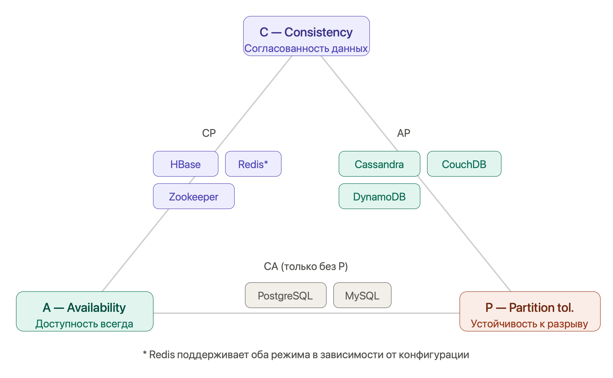

NoSQL¶
Зачем NoSQL, если есть SQL?¶
Реляционные БД отлично работают для структурированных данных с чёткими связями. Но у них есть ограничения, которые в определённых сценариях становятся критичными:
- Жёсткая схема — добавить поле означает миграцию таблицы. Для продуктов с частыми изменениями это боль.
- Вертикальное масштабирование — нагрузку снимают более мощным сервером. Горизонтальное (шардирование) есть, но сложное.
- Мощь не нужна — если хранишь сессии пользователей, кэш или очередь событий, реляционная модель избыточна.
- Неструктурированные данные — JSON-документы разной структуры, графы, временные ряды плохо ложатся в таблицы.
NoSQL (Not Only SQL) — не замена SQL, а другой инструмент под другие задачи.
Четыре семейства NoSQL¶
1. Document Store — документные БД¶
Суть: Данные хранятся как JSON/BSON документы. Нет фиксированной схемы — каждый документ может иметь разные поля.
Представители: MongoDB, CouchDB, Firestore.
// Документ "habit" в MongoDB
{
"_id": "64a1f2c3d4e5f6a7b8c9d0e1",
"userId": "user_42",
"name": "Утренняя пробежка",
"frequency": "daily",
"reminders": [
{ "time": "07:00", "enabled": true },
{ "time": "07:30", "enabled": false }
],
"streaks": {
"current": 14,
"longest": 30
},
"tags": ["здоровье", "спорт"],
"createdAt": "2024-01-15T07:00:00Z"
}
Spring Data MongoDB:
@Document(collection = "habits")
public class Habit {
@Id
private String id;
private String userId;
private String name;
private List<Reminder> reminders;
private Map<String, Integer> streaks;
// Вложенный объект — просто поле, никаких JOIN-ов
@Document
public record Reminder(String time, boolean enabled) {}
}
public interface HabitRepository extends MongoRepository<Habit, String> {
List<Habit> findByUserId(String userId);
// MongoDB Query
@Query("{ 'userId': ?0, 'streaks.current': { $gte: ?1 } }")
List<Habit> findActiveStreaks(String userId, int minDays);
}
Когда выбирать: - Данные имеют переменную структуру (каталог товаров где у каждого свои атрибуты) - Нужно хранить вложенные объекты без нормализации - Частые изменения схемы (стартап, быстрые итерации) - Чтение целого документа чаще, чем отдельных полей
Когда НЕ выбирать: - Сложные связи между сущностями (придётся делать JOIN в коде) - Нужны ACID-транзакции через несколько документов (MongoDB 4.0+ поддерживает, но дороже) - Данные высоко нормализованы и структурированы
2. Key-Value Store — хранилища "ключ-значение"¶
Суть: Максимально простая модель: ключ → значение. БД не знает что внутри значения. Скорость операций — O(1).
Представители: Redis, DynamoDB, Memcached.
Redis — самый популярный. Данные в памяти (in-memory), опциональная персистентность, богатые типы данных.
// Spring Data Redis
@Configuration
public class RedisConfig {
@Bean
public RedisTemplate<String, Object> redisTemplate(RedisConnectionFactory factory) {
RedisTemplate<String, Object> template = new RedisTemplate<>();
template.setConnectionFactory(factory);
template.setValueSerializer(new GenericJackson2JsonRedisSerializer());
return template;
}
}
@Service
public class HabitCacheService {
private final RedisTemplate<String, Object> redis;
private static final Duration TTL = Duration.ofMinutes(30);
// Простой кэш
public void cacheHabit(String habitId, HabitDto habit) {
redis.opsForValue().set("habit:" + habitId, habit, TTL);
}
public HabitDto getCachedHabit(String habitId) {
return (HabitDto) redis.opsForValue().get("habit:" + habitId);
}
// Счётчик streak (атомарная операция)
public long incrementStreak(String userId, String habitId) {
String key = "streak:" + userId + ":" + habitId;
return redis.opsForValue().increment(key);
}
// Хранение сессии пользователя
public void saveSession(String sessionId, UserSession session, Duration ttl) {
redis.opsForValue().set("session:" + sessionId, session, ttl);
}
// Очередь задач (List)
public void pushNotification(String userId, NotificationDto notification) {
redis.opsForList().leftPush("notifications:" + userId, notification);
}
public NotificationDto popNotification(String userId) {
return (NotificationDto) redis.opsForList().rightPop("notifications:" + userId);
}
// Уникальные просмотры (Set)
public void trackView(String habitId, String userId) {
redis.opsForSet().add("views:" + habitId, userId);
}
public long uniqueViewCount(String habitId) {
return redis.opsForSet().size("views:" + habitId);
}
// Топ привычек по streak (Sorted Set)
public void updateLeaderboard(String userId, double streak) {
redis.opsForZSet().add("leaderboard", userId, streak);
}
public Set<Object> getTopUsers(int count) {
return redis.opsForZSet().reverseRange("leaderboard", 0, count - 1);
}
}
Типы данных Redis:
| Тип | Команды | Применение |
|---|---|---|
| String | GET, SET, INCR, EXPIRE | Кэш, счётчики, сессии |
| List | LPUSH, RPOP, LRANGE | Очереди, история, лента |
| Set | SADD, SMEMBERS, SINTER | Уникальные элементы, теги |
| Sorted Set | ZADD, ZRANGE, ZRANK | Лидерборды, приоритеты |
| Hash | HSET, HGET, HGETALL | Объекты с полями |
| Stream | XADD, XREAD | Event sourcing, логи |
Когда выбирать: - Кэширование (самый частый кейс) - Сессии пользователей - Rate limiting (счётчик запросов с TTL) - Очереди задач - Pub/Sub (уведомления в реальном времени) - Лидерборды и рейтинги
3. Wide-Column Store — колоночные БД¶
Суть: Данные хранятся по столбцам, а не по строкам. Таблицы есть, но схема гибкая — строки в одной таблице могут иметь разные столбцы. Спроектированы для огромных объёмов данных и горизонтального масштабирования.
Представители: Apache Cassandra, HBase, Amazon Keyspaces.
-- Cassandra CQL (похож на SQL, но другая семантика)
CREATE TABLE habit_events (
user_id UUID,
habit_id UUID,
event_date DATE,
event_time TIMESTAMP,
completed BOOLEAN,
notes TEXT,
PRIMARY KEY ((user_id, habit_id), event_date, event_time)
) WITH CLUSTERING ORDER BY (event_date DESC, event_time DESC);
-- Partition key: (user_id, habit_id) — определяет на какой ноде лежат данные
-- Clustering key: event_date, event_time — порядок внутри партиции
-- Запрос: ОБЯЗАТЕЛЬНО по partition key
SELECT * FROM habit_events
WHERE user_id = ? AND habit_id = ?
AND event_date >= '2024-01-01';
-- ❌ Так нельзя — нет фильтрации по partition key
SELECT * FROM habit_events WHERE completed = true;
Spring Data Cassandra:
@Table("habit_events")
public class HabitEvent {
@PrimaryKeyColumn(name = "user_id", type = PrimaryKeyType.PARTITIONED, ordinal = 0)
private UUID userId;
@PrimaryKeyColumn(name = "habit_id", type = PrimaryKeyType.PARTITIONED, ordinal = 1)
private UUID habitId;
@PrimaryKeyColumn(name = "event_date", type = PrimaryKeyType.CLUSTERED, ordinal = 0,
ordering = Ordering.DESCENDING)
private LocalDate eventDate;
@Column private boolean completed;
@Column private String notes;
}
Главное правило Cassandra: Проектируй схему вокруг запросов, а не вокруг данных. В реляционных БД — нормализация, потом запросы. В Cassandra — сначала запросы, потом схема.
Чего нет в Cassandra
Нет JOIN. Нет агрегаций типа SUM/AVG/GROUP BY в традиционном смысле. Нет транзакций через несколько партиций (только lightweight transactions в одной партиции). Это не баг — это намеренный выбор в пользу скорости и масштабируемости.
Когда выбирать: - Огромные объёмы данных (терабайты, петабайты) - Высокая скорость записи (IoT, логи, метрики, события) - Временные ряды (история показателей, события с временной меткой) - Нужна линейная горизонтальная масштабируемость
4. Graph Database — графовые БД¶
Суть: Данные — это узлы (nodes) и рёбра (edges/relationships). Рёбра — первоклассные граждане, хранятся явно с атрибутами. Идеально для связанных данных.
Представители: Neo4j, Amazon Neptune, JanusGraph.
// Cypher — язык запросов Neo4j
// Создаём узлы и связи
CREATE (alice:User {id: 1, name: 'Alice'})
CREATE (bob:User {id: 2, name: 'Bob'})
CREATE (running:Habit {id: 10, name: 'Бег'})
CREATE (alice)-[:FOLLOWS]->(bob)
CREATE (alice)-[:PRACTICES {since: '2024-01-01', streak: 14}]->(running)
CREATE (bob)-[:PRACTICES {since: '2024-02-01', streak: 5}]->(running)
// Найти все привычки друзей Alice
MATCH (alice:User {name: 'Alice'})-[:FOLLOWS]->(friend:User)-[:PRACTICES]->(habit:Habit)
RETURN friend.name, habit.name, friend.streak
// Рекомендации: привычки, которые практикуют люди с похожими интересами
MATCH (me:User {id: $userId})-[:PRACTICES]->(habit:Habit)<-[:PRACTICES]-(other:User)
-[:PRACTICES]->(recommended:Habit)
WHERE NOT (me)-[:PRACTICES]->(recommended)
RETURN recommended.name, COUNT(other) AS popularity
ORDER BY popularity DESC
LIMIT 5
// Кратчайший путь между пользователями
MATCH path = shortestPath((alice:User {name:'Alice'})-[:FOLLOWS*]-(bob:User {name:'Bob'}))
RETURN path, length(path)
Когда выбирать: - Социальные графы (друзья, подписчики, рекомендации) - Системы рекомендаций - Обнаружение мошенничества (цепочки транзакций) - Карты и маршруты - Иерархические структуры (орг. структура компании) - Управление зависимостями (граф зависимостей пакетов)
CAP-теорема — главный компромисс¶

Теорема Брюера (CAP) говорит: в распределённой системе можно гарантировать только два из трёх свойств одновременно.
C (Consistency)
Согласованность
Все узлы видят
одинаковые данные
△
/ \
/ \
/ \
/ \
◇─────────◇
A (Availability) P (Partition tolerance)
Доступность Устойчивость к разделению
Каждый запрос Система работает даже если
получает ответ узлы не могут общаться
CA (без P) — нет смысла в реальных распределённых системах: сеть всегда может упасть. Это традиционные RDBMS на одном сервере.
CP (без A) — при разрыве сети система предпочтёт вернуть ошибку, чем устаревшие данные. HBase, Zookeeper, Redis (в режиме CP).
AP (без C) — при разрыве сети система продолжит работу, но может отдавать устаревшие данные. Cassandra, CouchDB, DynamoDB.
PACELC — более реалистичная модель
CAP описывает поведение только при сетевом разделении (P). Но большую часть времени сеть работает! PACELC добавляет: даже без разделения есть компромисс между Latency (задержка) и Consistency (согласованность). Cassandra позволяет настраивать уровень согласованности на уровне запроса через ConsistencyLevel.
Сравнительная таблица¶
| Document | Key-Value | Wide-Column | Graph | |
|---|---|---|---|---|
| Пример | MongoDB | Redis | Cassandra | Neo4j |
| Модель данных | JSON документы | Пары ключ-значение | Строки с динамическими столбцами | Узлы и рёбра |
| Схема | Гибкая | Нет | Гибкая | Гибкая |
| Запросы | По любому полю | Только по ключу | По partition key | Обход графа |
| Масштабирование | Горизонтальное | Горизонтальное | Линейное горизонтальное | Вертикальное (Neo4j) |
| ACID | Частично (4.0+) | Частично (транзакции) | Нет (LWT в партиции) | Да |
| CAP | CP или AP | CP | AP | CA |
| Лучший кейс | Каталоги, CMS | Кэш, сессии, очереди | IoT, логи, события | Соцсети, рекомендации |
Паттерны использования NoSQL в Spring Boot¶
Кэш-сквозной (Cache-Aside)¶
@Service
public class HabitService {
private final HabitRepository habitRepository; // PostgreSQL
private final HabitCacheService cacheService; // Redis
public HabitDto findById(String id) {
// 1. Проверяем кэш
HabitDto cached = cacheService.getCachedHabit(id);
if (cached != null) return cached;
// 2. Промах — идём в БД
HabitDto habit = habitRepository.findById(id)
.map(HabitMapper::toDto)
.orElseThrow(() -> new HabitNotFoundException(id));
// 3. Кладём в кэш для следующих запросов
cacheService.cacheHabit(id, habit);
return habit;
}
public HabitDto update(String id, HabitUpdateDto dto) {
HabitEntity entity = habitRepository.findById(id).orElseThrow();
entity.setName(dto.name());
habitRepository.save(entity);
// Инвалидируем кэш после обновления
cacheService.evictHabit(id);
return HabitMapper.toDto(entity);
}
}
Полиглотная персистентность (Polyglot Persistence)¶
Разные данные хранить там, где они хранятся лучше всего:
@Service
public class HabitTrackerService {
private final HabitJpaRepository postgresRepo; // Основные данные (PostgreSQL)
private final HabitEventRepository cassandraRepo; // История событий (Cassandra)
private final RedisTemplate<String, Object> redis; // Кэш и сессии (Redis)
private final MongoTemplate mongo; // Аналитика и отчёты (MongoDB)
public void recordHabitCompletion(String userId, String habitId) {
// Обновляем streak в PostgreSQL (транзакция)
postgresRepo.incrementStreak(userId, habitId);
// Записываем событие в Cassandra (масштабируемая история)
cassandraRepo.save(new HabitEvent(userId, habitId, LocalDateTime.now(), true));
// Обновляем Redis (кэш + лидерборд)
redis.opsForValue().increment("streak:" + userId + ":" + habitId);
redis.opsForZSet().incrementScore("leaderboard:" + habitId, userId, 1);
// Сбрасываем кэш профиля
redis.delete("profile:" + userId);
}
}
Rate Limiting через Redis¶
@Component
public class RateLimiter {
private final RedisTemplate<String, String> redis;
public boolean isAllowed(String userId, String endpoint, int maxRequests, Duration window) {
String key = "rate:" + userId + ":" + endpoint;
Long count = redis.opsForValue().increment(key);
if (count == 1) {
// Первый запрос — устанавливаем TTL окна
redis.expire(key, window);
}
return count <= maxRequests;
}
}
// Использование в фильтре:
// isAllowed("user_42", "/api/habits", 100, Duration.ofMinutes(1))
// → true пока запросов ≤ 100 в минуту, потом false
Итоговая шпаргалка¶
| Тема | Запомнить |
|---|---|
| NoSQL vs SQL | Не замена, а другой инструмент. Гибкая схема, горизонтальное масштабирование, специализация |
| Document | JSON-документы, гибкая схема. MongoDB. Каталоги, CMS, данные с переменной структурой |
| Key-Value | O(1) по ключу. Redis. Кэш, сессии, счётчики, очереди, лидерборды |
| Wide-Column | Проектируй под запросы. Cassandra. IoT, логи, временные ряды, огромные объёмы |
| Graph | Узлы и рёбра — первоклассные граждане. Neo4j. Соцсети, рекомендации, мошенничество |
| CAP | C + P = HBase. A + P = Cassandra. Реальных CA нет в распределённых системах |
| Redis типы | String (кэш), List (очередь), Set (уникальные), ZSet (рейтинг), Hash (объект), Stream (события) |
| Cassandra правило | Partition key обязателен в запросе. Схема = запросы, не данные |
| Cache-Aside | Читай из кэша → промах → БД → положи в кэш → инвалидируй при обновлении |
| Polyglot | Разные данные в разных БД. PostgreSQL + Redis + Cassandra — нормально |